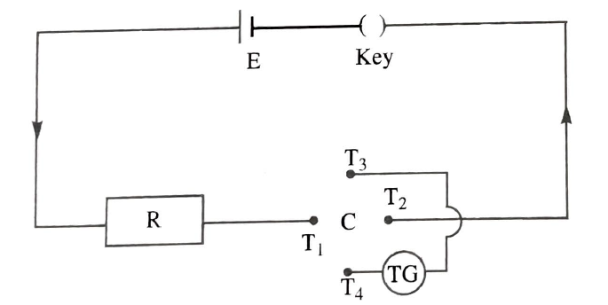
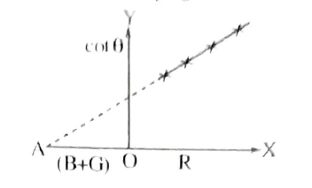

To verify ohm's law by drawing R-cot \(\theta\) grapf and to determine the internal resistance of the battery used.
At constant temperature the current ''i'' passing through a resistence box of range(0 to 10\(\Omega\)) Spirit level,connecting wires.
At constant temperature the current ''i'' passing through a resistence 'R' is propotional to the potential difference 'V' across the resistance.
\(i\alpha V(or)\, i=V/R\)
Where''i'' is the strength of the current flowing through a resistence R,V is potential difference applied Hence according to ohms law
V=i R(at constant temperature)
if 'i' is the current in the circuit having a resistence R and tangent galvanometer resistance G by applying a constant potential difference 'V' by a source(battery or battery eliminator) with an internal resistance 'B' total resistance in the circuit is (R+B+G).
\(i=k\, tan\theta =\frac{V}{R+B+G}\: or(R+B+G)tan\theta =\frac{V}{K}=constant\)
The connections are made as shown in the circuit with the terminal T1 and T2 of commuutator in series with the resistance box,key and battery.The other two terminals T3 and T4 are connected to the tangent galanometer.Close the circuit.Select some resistance R in the resistance box, so that the deflection is nearly 300.The deflection \(\theta\)1 and \(\theta\)2 of the two ends of the galvanometer are noted.The current is reversed and the two more deflections \(\theta\)3 and \(\theta\)4 are noted.The average \(\theta\) of the deflection \(\theta\)1,\(\theta\)2,\(\theta\)3 and \(\theta\)4 is calculated
It is deflection for a particular current i1.The experiment is repeated by increasing the resistence R in the box in steps and corresponding average deflections are determined.The readings are tabulated.
A graph is drawn between the resistance 'R' on x-axis and cot\(\theta\) on y-axis.It is straight line.When it is extrapolated.It cuts the resistance axis.The intercept gives (B+G) value.
(B+G) value is determined from the graph and the product (R+B+G) tan\(\theta\) is calculated for each resistance. The product obtained found be nearly constant with in experiment error verifying ohms law.